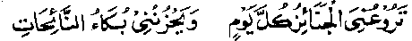
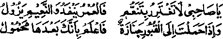
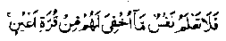

Chapter Seven
54. The story of Haroon Rashid’s ascetic son and the events of his death
Khalifah Haroon Rashid Rahmatullah alaihe had a son, about sixteen years of age, who used to associate frequently with the ascetics and spiritual leaders of those timescale would often go to the graveyard, sit by the graves and say, "There was a time when you inhabited this world and you were its masters. But the world did not protect you and you ended up in graves. Would that I knew what you are experiencing now! I wish I knew what you said in reply to the questions that were asked of you!" He used to recite this couplet very often:

"The funerals frighten me everyday, and wailings of the female mourners make me sad. ”
One day, the young boy came to the court of his father, Haroon Rasheed, while he was sitting in company with his viziers, lords and noblemen. The boy was dressed in simple clothes, with a turban on his head; when the courtiers saw him in this condition, they said, "The ways of this mad boy are a disgrace to the Amir-ul-Mo’mineen, in the sight of the kings; if he could admonish him, the boy might give up his foolish habits.’ The Khalifah heard this and said to his son, "My dear son, you have disgraced me in the sight of the kings". At this, the boy did not say a word (to his father), but called out to a bird sitting nearby, "O bird, I ask you, in the name of Him Who created you, to come and sit on my hand," whereupon the bird flew across to him and perched on his hand. The boy then told it to fly away and it flew back to perch as before. After this, he said to his father, "My dear father, as a matter of fact, it is your attachment of the world that is a disgrace to me. I have made up my mind to part from you". And, saying this, the boy went away, taking only the Qur’an with him. When he went to take leave from his mother, she gave him a precious ring (so that he might sell it and use the money in case of need). The boy then went to Basrah, to work among the labourers. He accepted employment only on Saturdays, using his day’s wages for seven days, spending a Danaq (One sixth Dirham) each day.
The remaining story has been related by Abu Aamir Basri Rahmatullah alaihe, who says, "Once a wall of my house collapsed and I needed a mason to rebuild it. Somebody told me that there was a young boy who did the work of a mason and I went looking for him. Outside the city, I saw a handsome young boy sitting on the ground and reciting the Holy Qur’an with a bag lying beside him. I r 'red him if he would like to work as a labourer and he said, 'Certainly we have been created to toil and labour. What work would you want me to do?’ I said that I needed a mason to do some construction. He said, ‘I shall take a Dirham and a Danaq as my wages for the day, and I shall have to stop work and go to the Masjid when it is time for Salaat; I shall resume work after Salaat.’ I agreed; he came with me and began to work on the wall. I came back in the evening and I was surprised to see that he had done as much work as ten masons. I gave him two Dirhams, but he refused to accept more than a Dirham and a ‘Danaq’ and was gone, taking just as much as had been agreed upon.
‘Next morning, I went out again, looking for him, but I was told that he worked only on Saturdays and that nobody could find him on other days of the week. As I was greatly satisfied with his work, I decided to postpone the remaining construction till Saturday. When Saturday came round, I again went looking for him and found him in the same place, reciting from the Holy Qur’an as usual. When I greeted him, saying 'Assalaam-o-Alaikum’, he returned my greetings, saying, ‘Wa-‘Alaikum-as-Salaam’ and agreed to work for me on the same conditions, came with me and started to work on the wall. Wondering how he had done ten days’ work last Saturday, I watched him working, without being noticed by him. I saw, to my great amazement, that, when he put mortar on the wall, the stones automatically joined together. I was sure that he was one of the favourites of Allah, as such people are assisted by unseen help from Allah Ta‘ala. In the evening, I wanted to give him three Dirhams, but he took just a Dirham and a Danaq and went away, saying, ’ I have no use for more than this amount’. I waited for him for another week and went out looking for him again next Saturday, but could not find him anywhere. On my enquiring from people, a man told me that he had been ill for three days and was lying in a deserted place; so I engaged a guide on payment to lead me to the place. We reached there to find him lying unconscious on the ground, his head pillowed on a piece of broken brick. I greeted him, but he did not respond and I said, 'Assalaam-o-Alaikum’ again, a bit louder. This time he opened his eyes and recognized me. I laid his head in my lap, but he put it back on the piece of brick and recited a few couplets, two of which I still remember: '

rO my friend, do not be beguiled by the luxuries of the world, for, your life is passing away; the luxuries are short-lived. And when you carry a bier to the grave, remember, one day you, too, will be carried to the graveyard.’
The boy then said to me, ‘Abu Amir, when my soul departs, wash me and shroud me in the clothes that I am wearing now.’I said, "Dear me, I see no harm in buying new cloth for your shroud”. He said, ‘The living are more in want of new clothes than the dead.’ (These, exactly, were the words spoken by Abu Bakr Radhiallaho anho when he was nigh unto death and he willed that he should be shrouded in. his old garments, when they asked his permission to buy new cloth for his shroud).
"The boy added, ‘The shroud (old or new) will quickly decay. What remains with a man after his death are his deeds. Give this turban of mine and the jug of water to the grave-digger and, when you have hurried me, convey this copy of the Holy Qur’an and this ring to Khalifah Haroon Rashid and mind, you deliver it into his own hands and say, ‘These things were entrusted to me by a stranger boy who bade me convey them to you,’with the words: ‘O Father, take heed, lest you die in heedlessness, beguiled by the world’. With these words on his lips the young boy gave up his soul. At that moment I came to know that he was a prince.
"After his death, I washed him, shrouded him and laid him in the grave, even as he had desired and I gave his turban and the jug to the grave-digger. After this, I undertook a journey to Baghdad in order to deliver the ring and the Holy Book to the Khalifah. Luckily for me, when I reached the Khalifah’s palace, his cavalcade was just coming out of the court. I stood on a raised platform and watched the pageant. There came out from the palace a troop of a thousand horsemen, followed by ten more troops, in each a thousand horsemen. In the last troop rode the Ameer-ul-Mo’mineen,. himself, on seeing whom I called in a loud voice, ‘O, Ameer-ul-Mo’mineen, I beseech you, in the name of your kinship with Rasulullah Sallallaho alaihe wasallam, to stop a while’. The Ameer-ul-Mo‘mineen stopped and looked round, I went forward at once and handed over to him the two trusts of the deceased prince, saying, ‘These things were entrusted to me by a stranger boy who passed away, leaving a will that these should be delivered into your own hands. The Khalifah looked at the ring and the Holy Qur’an and hung his head in sorrow: I saw tears dripping from his eyes. The Ameer-ul-Mo‘mineen,then, told his chamberlain to escort me to his palace and to present me to him when he came back from the promenade. I stayed with the chamberlain in the palace.
"When the Khalifah came back in the evening, he ordered the curtains of his palace to be drawn down and told the chamberlain to call me into his presence,even though, he said, 'The man will just revive my sorrow: The chamberlain came to me and said,' The Ameer-ul-Mo‘mineen wants you, but mind, he is grievously shocked. If you want to say something in ten words, try to put it in five ’. He then ushered me into the private room of the Khalifah, who was sitting there all by himself. The Khalifah told me to sit closer to him and when I had taken my seat, asked me, 'Do you know that son of mine?' I said Yes, and he asked me, ‘ What did he do for a living?’i said that he did the work of a mason. The Ameer-ul-Mo‘mineen said, 'Did you also engage him to do the work of a mason?’ I said that I had done so. The Ameer-ul-Mo‘mineen said, ‘Did it not occur to your mind that he had a kinship with Rasulullah'. (Haroon Rasheed was a descendant of Abbas Radhiallaho anho, the uncle of Rasulullah Sallallaho alaihe wasallam). I said, ‘O Ameer-ul-Mo‘mineen! First of all, I beg forgiveness of Allah Ta'ala and then beg your pardon, but I did not know of it at that time. I only learnt about it after he had passed away’The Khalifah said,‘Did you wash his body with your own hands? I said, "Yes’ and he said, ‘Let me touch your hand’. He then held my hand to his bosom, caressing his chest with it, and recited a few verses which meant:
O thou estranged from me, my heart melts away with grief over thee; my eyes shed tears of sorrow! O thou whose burial-place is far, too far, thy grief is closer to my heart. True, death disconcerts most excellent pleasures of the‘world. Ah, my estranged son was like a moon hanging above a silvery bough. The moon has set in the grave, the silvery bough gone to dust.
After this, Haroon Rashid decided to go to Basrah to visit the grave of his son. I, Abu Aamir also accompanied him. Standing by his son’s grave, Haroon Rasheed recited the following verses,
‘O voyager to the Unknown, never shalt thou come back home. Death snatched you away in the first bloom of youth. O coolness of my eyes, thou wert my solace, my heart’s peace, in long lonely hours of night and in brief moments of joy. Thou hast tasted of the potion of death, which thy father shall drink in old age. Indeed, each one must taste of Death, be he nomad or a town dweller. All praise be to Allah, the One, Who has no partners; for these are the manifestations of His Divine Decree? The following night, when I went to bed after observing my daily devotional practices, I dreamt that I saw a domed building bathed in Noor,above which there hung a cloud of Noor. Out of this cloud of Noor came the voice of the deceased boy, talking to me, ‘Abu Aamir, May Allah grant you the best reward (for washing and shrouding me and for acting upon my will)!’ I asked him, My dear friend, how are you faring in the next world? ’ He said, I have been admitted to the presence of my Lord, Who is the Most Bounteous One and Who is well pleased with me. He has granted me such Bounties as eyes have never seen, ears have never heard of and minds have never thought of." (The reference is to a Hadith Qudsi which narrates as follows: Rasulullah reports Allah Ta'ala as saying: "I have prepared for my righteous servants things that no eye has seen, nor any ear heard of, nor entered in the mind of man".
Abdullah bin Mas'ood Radhiallaho anho narrates; ‘It occurs in the Torah that Allah Ta'ala has prepared for those who forsake their beds to cry unto their Lord (observe Tahajjud Salaat) such bounties as no eye has seen, nor any ear heard, nor occurring in the mind of any man, nor does any angel (however near to Allah) know of them, nor are they known to any Nabi or Rasul. Allah Ta'ala says, in the Holy Qur’an:

No soul knoweth what is kept hidden for them of joy (most pleasing to their eyes). (Sajdah: 17 )
The boy then said to me (in the dream), ‘Allah Ta'ala has promised me, swearing by His Glory, that He would grant such honours and bounties to all those who come out of the world like me, without, being tainted by it!’
The author of ‘Raudh’ says that this story has also come down to him through another chain of narration. This version adds: Someone asked Haroon Rashid about this boy and he said,“This son was born before my ascension to the Caliphate and was brought up very well and was taught good manners. He had learnt the Holy Qur’an and other related branches of religious knowledge, but when I rose to be a Khalifah, he forsake me and went away. My worldly magnificence did not bring him any comfort in life, for he did not like to benefit from it in. any way. When he was going away, I asked his mother to give him the ring, the pearl set in which was very precious, but he did not make use of it and sent it back before his death. The boy had been very obedient to his mother." (Raudh).
Haroon Rashid Rahmatullah alaihe,whose son resented his attachment to the world, is known to be a very pious and kind-hearted Khalifah. When one possesses power and is favoured with fortune, one might well lapse into improprieties, but history bears evidence to the fact that he did a lot for the cause of ‘Deen’ (Religion). During his Caliphate, he performed one hundred Rak'aat of Nafl Salaat everyday, until his death. He used to give, as Sadaqah, from his private purse a thousand Dirhams everyday. He led the Jehaad expedition and performed Hajj in alternate years. When he went for Hajj, he took with him a hundred Ulama and their sons. During the years when he was engaged in Jehaad, he would send three hundred of his subjects for Hajj, bearing the expenses of their travel, food and clothing, giving most generous supplies of provisions, with nice clothes to wear. The Khalifah was also wont to grant generous gifts to those who asked favours of him and also bestowed favours on others, on his own initiative, without their asking for them. He loved the Ulama, who were held in great reverence in his court. Once the renowned Muhaddith, Abu Mu’awiya ad-Dharir (meaning ‘the blind’) took a meal with Haroon Rashid and when the blind scholar rose to wash his hands after the meal, the Khalifah himself poured water on his hands, saying that he did so out of reverence for his learning. Abu Mu’awiya ad-Dharir Rahmatullah alaihe relates, "Once when I narrated to him the Hadith of Rasulullah Sallallaho alaihe wasallam about the disputation of Adam Alaihissalam and Musaa Alaihissalam, there was sitting by him a man who said, ‘But where did they meet?' At this, Haroon Rashid flew into a rage and exclaimed, ‘Where is my sword? Shall a‘Zindiq’ (heretic or one holding an opinion contrary to the accepted teaching of religion) question a Hadith of Rasulullah Sallallaho alaihe wasallam. Haroon Rashid wept bitterly when an exhortation was addressed to him. (History of Baghdad by al-Khateeb).